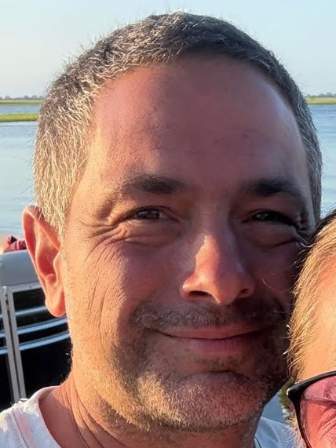

Nick Conenna
Founding author
Writes sports romance, alternate-history space fiction, and thrillers, plus nonfiction on the systems that shape how we live: energy, money, and the way people push toward peak experience.
Books
- The Festival LeagueSports romance, starting with Stoppage Time
- To StayAlternate-history space fiction
- The Cubit and the QuarkThriller series, starting with The Pace
- NonfictionThe Scoreboard, Set & Setting, Digital Gold for Everyone